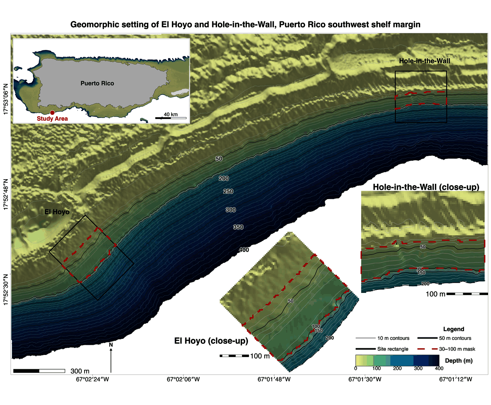
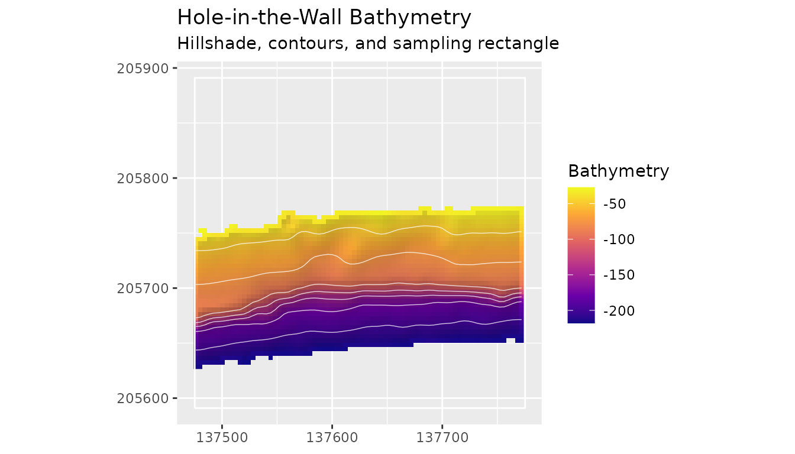
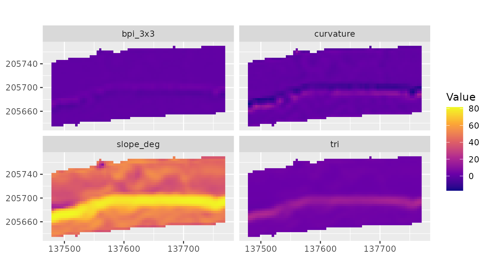
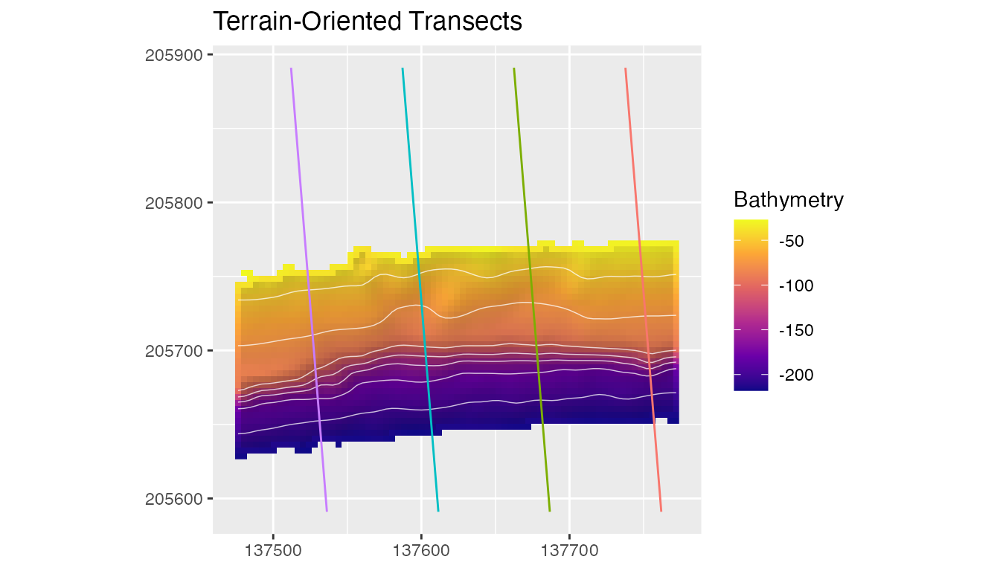
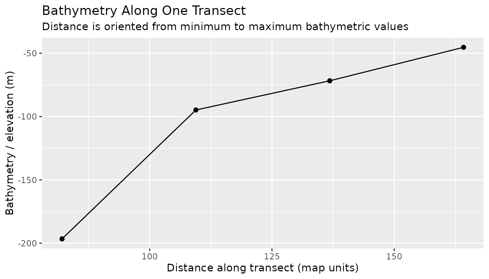
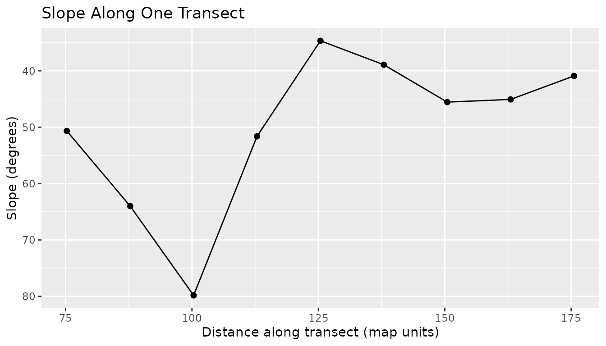
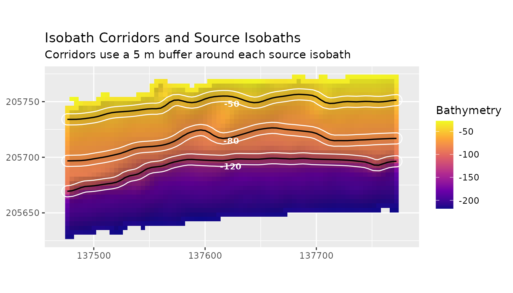
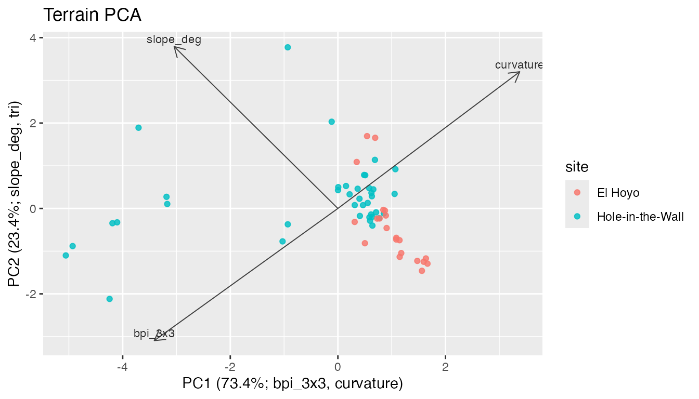
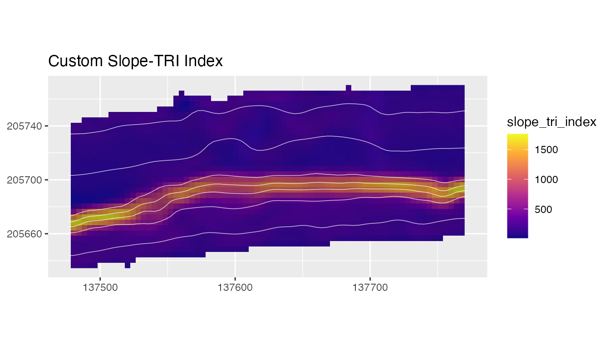

blueterra works from bathymetric and elevation rasters
already available to the analyst. The package keeps the workflow close
to terra: rasters remain SpatRaster objects,
sampling zones and transects remain SpatVector objects, and
extracted values become ordinary tables for summaries and models.

The examples use reduced bathymetry and sampling rectangles from Hole-in-the-Wall, El Hoyo, and a broader slope clip along the southwest Puerto Rico shelf margin near La Parguera, Puerto Rico. The files are compact, but they retain real relief, depth gradients, slope breaks, and sampling geometry.
Read Example Data
hitw <- read_bathy(blueterra_example("hitw"))
hoyo <- read_bathy(blueterra_example("hoyo"))
slope <- read_bathy(blueterra_example("slope"))
rectangles <- terra::vect(blueterra_example("sampling_rectangles"))
hitw_rect <- rectangles[rectangles$site_id == "hitw", ]
hoyo_rect <- rectangles[rectangles$site_id == "hoyo", ]
bathy_info(hitw)
#> # A tibble: 1 × 13
#> layer nrow ncol ncell xmin xmax ymin ymax xres yres min max
#> <chr> <dbl> <dbl> <dbl> <dbl> <dbl> <dbl> <dbl> <dbl> <dbl> <dbl> <dbl>
#> 1 bathy_m 75 75 5625 137474. 1.38e5 2.06e5 2.06e5 4.00 4.00 -269. -16.6
#> # ℹ 1 more variable: crs <chr>
rectangles[, c("site_id", "site_name", "feature_type")]
#> class : SpatVector
#> geometry : polygons
#> dimensions : 3, 3 (geometries, attributes)
#> extent : 134960.3, 138741.2, 204155.7, 205950.2 (xmin, xmax, ymin, ymax)
#> source : laparguera_sampling_rectangles.gpkg
#> coord. ref. : NAD83 / Puerto Rico & Virgin Is. (EPSG:32161)
#> names : site_id site_name feature_type
#> type : <chr> <chr> <chr>
#> values : hitw Hole-in-the-Wall sampling_rectangle
#> hoyo El Hoyo sampling_rectangle
#> slope Slope Clip analysis_extentbathy_info() is a first check on raster dimensions,
value range, resolution, extent, and CRS. These fields affect slope,
focal-window metrics, buffers, and distance along transects.
Prepare the Bathymetry
The example rasters store bathymetry as negative elevation.
prepare_bathy() preserves that convention unless a
conversion is requested explicitly.
prepared <- prepare_bathy(
hitw,
depth_range = c(-220, -25),
smooth = TRUE,
smooth_window = 3
)
check_bathy_units(prepared, units = "m", positive_depth = FALSE)
#> # A tibble: 1 × 5
#> layer min max units positive_depth
#> <chr> <dbl> <dbl> <chr> <lgl>
#> 1 bathy_m -218. -27.2 m FALSE
range(terra::values(prepared), na.rm = TRUE)
#> [1] -217.94669 -27.22529
plot_bathy(
prepared,
contours = TRUE,
contour_interval = 25,
vectors = hitw_rect,
title = "Hole-in-the-Wall Bathymetry",
subtitle = "Hillshade, contours, and sampling rectangle"
)
Hillshade is used here as visual relief. It helps the reader see escarpments and local relief, but it is not a predictor unless the analyst explicitly derives and includes it.
Derive Metrics and Process Groups
Terrain metrics describe different aspects of the same bathymetric surface. Slope and aspect describe local orientation; northness and eastness convert aspect to linear components; TRI and rugosity describe local relief variability; BPI describes relative position; curvature summarizes local surface bending.
terrain <- derive_terrain(
prepared,
metrics = c(
"slope", "aspect", "northness", "eastness", "tri", "rugosity",
"bpi", "curvature", "surface_area_ratio"
)
)
names(terrain)
#> [1] "slope_deg" "aspect_deg" "northness"
#> [4] "eastness" "tri" "rugosity_vrm_3x3"
#> [7] "bpi_3x3" "bpi_11x11" "curvature"
#> [10] "surface_area_ratio"
assign_process_groups(terrain)
#> # A tibble: 10 × 7
#> metric metric_standard label process_group description source_function
#> <chr> <chr> <chr> <chr> <chr> <chr>
#> 1 slope_deg slope_deg Slope slope_gradie… Local slop… derive_slope
#> 2 aspect_deg aspect_deg Aspe… orientation Local down… derive_aspect
#> 3 northness northness Nort… orientation Cosine tra… derive_northne…
#> 4 eastness eastness East… orientation Sine trans… derive_eastness
#> 5 tri tri Terr… seafloor_rug… Local terr… derive_tri
#> 6 rugosity_vrm… rugosity_vrm_3… Vect… seafloor_rug… Vector rug… derive_rugosity
#> 7 bpi_3x3 bpi_3x3 Fine… seafloor_pos… Fine-scale… derive_bpi
#> 8 bpi_11x11 bpi_11x11 Broa… seafloor_pos… Broad-scal… derive_bpi
#> 9 curvature curvature Curv… curvature Laplacian-… derive_curvatu…
#> 10 surface_area… surface_area_r… Surf… surface_stru… Approximat… derive_surface…
#> # ℹ 1 more variable: matched <lgl>
summarize_process_groups(terrain)
#> # A tibble: 6 × 3
#> process_group n_metrics metrics
#> <chr> <int> <chr>
#> 1 curvature 1 curvature
#> 2 orientation 3 aspect_deg, northness, eastness
#> 3 seafloor_position 2 bpi_3x3, bpi_11x11
#> 4 seafloor_rugosity 2 tri, rugosity_vrm_3x3
#> 5 slope_gradient 1 slope_deg
#> 6 surface_structure 1 surface_area_ratio
plot_metric_stack(terrain[[c("slope_deg", "tri", "bpi_3x3", "curvature")]])
Process groups keep related derivatives together. They are interpretation categories for terrain form, not direct measurements of currents, sediment transport, habitat condition, or ecological response.
Summarize Sampling Rectangles
Sampling rectangles provide a compact example of zone-based extraction. Each polygon is treated as a spatial sampling frame, and summary statistics are calculated from raster cells inside that frame.
zone_summary <- summarize_terrain(
terrain,
hitw_rect,
fun = c("mean", "sd", "min", "max")
)
zone_summary[, c("site_id", "site_name", "slope_deg_mean", "bpi_3x3_mean")]
#> # A tibble: 1 × 4
#> site_id site_name slope_deg_mean bpi_3x3_mean
#> <chr> <chr> <dbl> <dbl>
#> 1 hitw Hole-in-the-Wall 50.9 0.00568Transects and Cross-Sections
Transects convert the raster surface into profiles. When
bathy is supplied, make_transects() can
estimate a terrain-oriented line angle from local aspect instead of
requiring the analyst to choose a fixed direction by hand.
orientation <- estimate_surface_orientation(prepared, hitw_rect)
transects <- make_transects(hitw_rect, spacing = 75, bathy = prepared)
cross_sections <- sample_transects(transects, prepared, n = 12)
orientation
#> [1] 94.61515
unique(as.data.frame(transects)[, c("angle_deg", "angle_source", "mean_aspect_deg")])
#> angle_deg angle_source mean_aspect_deg
#> 1 94.61515 surface 175.3849
head(cross_sections[, c("transect_id", "distance", "bathy_m")])
#> # A tibble: 6 × 3
#> transect_id distance bathy_m
#> <chr> <dbl> <dbl>
#> 1 1_1 0 NaN
#> 2 1_1 27.4 NaN
#> 3 1_1 54.7 NaN
#> 4 1_1 82.1 -197.
#> 5 1_1 109. -94.8
#> 6 1_1 137. -71.8
plot_transects(
prepared,
transects,
color_by = "transect_id",
show_legend = FALSE,
contour_interval = 25,
title = "Terrain-Oriented Transects"
)
plot_cross_sections(
cross_sections,
value_col = "bathy_m",
show_legend = TRUE,
mean_profile = TRUE,
normalize_distance = TRUE,
profile_direction = "min_to_max",
title = "Bathymetric Cross-Sections"
)
The y-axis is explicitly set to bathy_m. This prevents
transect metadata such as width, angle, or offset from being mistaken
for the raster value. Distance is oriented from the lower numeric
endpoint toward the higher numeric endpoint so cross-sections share a
common value direction.
one_transect <- cross_sections[
cross_sections$transect_id == cross_sections$transect_id[1],
]
plot_depth_profile(
one_transect,
value_col = "bathy_m",
profile_direction = "min_to_max",
title = "Bathymetry Along One Transect",
subtitle = "Distance is oriented from minimum to maximum bathymetric values"
)
Metric profiles can use the same transect geometry. When the plotted
value is a metric such as slope, the distance order is often best
preserved from the bathymetric profile by using
profile_direction = "as_sampled".
metric_samples <- sample_transects(
transects,
terrain[["slope_deg"]],
n = 25
)
metric_one <- metric_samples[
metric_samples$transect_id == metric_samples$transect_id[1],
]
plot_depth_profile(
metric_one,
value_col = "slope_deg",
profile_direction = "as_sampled",
title = "Slope Along One Transect"
)
Isobath Corridors
Isobath corridors summarize terrain along depth horizons. The source isobaths are shown in black so the reader can see which contour each corridor buffers. Corridors use a 5 m buffer around each source isobath.
isobaths <- extract_isobaths(prepared, depths = c(-50, -80, -120))
corridors <- make_isobath_corridors(prepared, depths = c(-50, -80, -120), width = 5)
corridors[, c("contour_value", "depth_label", "corridor_id")]
#> class : SpatVector
#> geometry : polygons
#> dimensions : 3, 3 (geometries, attributes)
#> extent : 137471.2, 137777, 205664.4, 205761.6 (xmin, xmax, ymin, ymax)
#> coord. ref. : NAD83 / Puerto Rico & Virgin Is. (EPSG:32161)
#> names : contour_value depth_label corridor_id
#> type : <num> <num> <int>
#> values : -50 -50 1
#> -80 -80 2
#> -120 -120 3
summarize_isobath_terrain(terrain, corridors)[, c("contour_value", "slope_deg_mean", "bpi_3x3_mean")]
#> # A tibble: 3 × 3
#> contour_value slope_deg_mean bpi_3x3_mean
#> <dbl> <dbl> <dbl>
#> 1 -50 46.2 -0.01000
#> 2 -80 40.0 -0.0209
#> 3 -120 77.7 1.25
plot_isobath_corridors(
corridors,
prepared,
isobaths = isobaths,
background_contours = FALSE,
title = "Isobath Corridors and Source Isobaths",
subtitle = "Corridors use a 5 m buffer around each source isobath"
)
PCA and Model-Ready Tables
Cell samples and extracted summaries can be sent directly into exploratory models. PCA is useful for checking whether terrain metrics form separable gradients across sites or sampling frames.
hoyo_prepared <- prepare_bathy(hoyo, depth_range = c(-220, -25), smooth = TRUE)
hoyo_metrics <- derive_terrain(hoyo_prepared, metrics = c("slope", "tri", "bpi", "curvature"))
hitw_cells <- sample_terrain_cells(
terrain[[c("slope_deg", "tri", "bpi_3x3", "curvature")]],
size = 45,
method = "regular"
)
hitw_cells$site <- "Hole-in-the-Wall"
hoyo_cells <- sample_terrain_cells(
hoyo_metrics[[c("slope_deg", "tri", "bpi_3x3", "curvature")]],
size = 45,
method = "regular"
)
hoyo_cells$site <- "El Hoyo"
comparison <- rbind(hitw_cells, hoyo_cells)
pca <- terrain_pca(
comparison,
vars = c("slope_deg", "tri", "bpi_3x3", "curvature")
)
pca$variance
#> # A tibble: 4 × 3
#> component proportion cumulative
#> <chr> <dbl> <dbl>
#> 1 PC1 0.734 0.734
#> 2 PC2 0.234 0.968
#> 3 PC3 0.0323 1.000
#> 4 PC4 0.000144 1
pca_axis_labels(pca)
#> PC1 PC2
#> "PC1 (73.4%; bpi_3x3, curvature)" "PC2 (23.4%; slope_deg, tri)"
plot_process_pca(
pca,
color_col = "site",
title = "Terrain PCA"
)
The same sampled table can be converted to a model matrix after selecting the terrain variables that belong in the analysis design.
model_matrix <- prepare_model_matrix(
comparison,
response = "site",
vars = c("slope_deg", "tri", "bpi_3x3", "curvature")
)
head(model_matrix)
#> $x
#> slope_deg tri bpi_3x3 curvature
#> [1,] 53.771502 4.2776146 0.047225010 -0.214831882
#> [2,] 46.054025 3.2388989 -0.010152063 -0.398491753
#> [3,] 81.059597 20.2068575 1.260175729 -3.469890171
#> [4,] 79.892270 17.3124146 -1.098478529 3.712643941
#> [5,] 69.594484 8.2898547 -0.631674684 2.156751845
#> [6,] 53.551971 4.1491443 -0.075533455 0.173663669
#> [7,] 52.643780 4.1223865 -0.368243936 1.141960992
#> [8,] 54.754120 4.3434862 0.030169640 -0.052554660
#> [9,] 50.357265 3.7468315 -0.001245758 0.051052517
#> [10,] 48.023985 3.4385543 -0.274942845 0.828564114
#> [11,] 46.871190 3.3412274 -0.061833700 0.164659288
#> [12,] 50.250890 3.7344566 -0.148123094 0.470535278
#> [13,] 35.528501 2.2008902 0.110499629 -0.342886183
#> [14,] 36.169907 2.3102840 -0.038360313 0.124103970
#> [15,] 54.901197 4.3059165 0.920816304 -2.951790704
#> [16,] 75.231381 11.9311598 1.802034355 -5.390027364
#> [17,] 74.822465 11.1950880 1.898650275 -5.591580709
#> [18,] 76.711732 12.7363065 2.578476517 -7.726888869
#> [19,] 76.792282 12.9999932 2.595412078 -8.000186496
#> [20,] 77.343290 13.5549534 3.279998873 -9.865381029
#> [21,] 77.042917 13.1591659 3.437308983 -10.465014140
#> [22,] 67.337099 7.3553222 3.557343565 -10.746496412
#> [23,] 44.274585 3.0054715 -0.021984053 0.059376187
#> [24,] 37.602207 2.4077347 0.076135141 -0.260565016
#> [25,] 39.604844 2.5055916 -0.002457466 -0.019346025
#> [26,] 40.416305 2.6593059 -0.467899746 1.401441786
#> [27,] 39.053370 2.4771684 -0.076112159 0.210446676
#> [28,] 44.739193 3.1514739 -0.205907092 0.651959737
#> [29,] 36.745116 2.3140138 -0.148900162 0.389677260
#> [30,] 46.636258 3.3109745 -0.296354459 0.930314382
#> [31,] 38.431177 2.4536994 0.017271207 -0.046087053
#> [32,] 39.087241 2.4574393 0.045696023 -0.166963365
#> [33,] 51.089293 3.8183691 1.127037234 -3.805676884
#> [34,] 54.548900 4.4227983 -0.589382295 2.160372840
#> [35,] 52.433979 4.0633652 -0.389470842 1.128767225
#> [36,] 46.120989 3.2096976 -0.245282585 0.731026120
#> [37,] 47.648277 3.4893018 -0.736916201 2.315221998
#> [38,] 44.044272 2.9300482 -0.098906882 0.257372114
#> [39,] 41.566101 2.7559077 0.130280577 -0.397131178
#> [40,] 31.223836 1.8659907 -0.003382365 0.022372776
#> [41,] 18.094215 0.9419734 0.182118169 -0.538219876
#> [42,] 62.573341 5.6479789 -0.880502206 2.439978706
#> [43,] 35.970780 2.1171144 -0.136628139 0.400656806
#> [44,] 36.699285 2.2968160 -0.022515191 0.020784590
#> [45,] 10.596341 0.5346076 -0.075918127 0.198861864
#> [46,] 11.969491 0.6161526 0.042096268 -0.134649489
#> [47,] 58.366517 4.7099255 -0.454074624 1.309631348
#> [48,] 37.477138 2.3487394 -0.179434506 0.554960463
#> [49,] 7.130658 0.3703213 0.096004045 -0.344619380
#> [50,] 24.882640 1.4225202 0.024847148 -0.065704346
#> [51,] 41.347120 2.5767882 0.253973831 -0.756802877
#> [52,] 9.987240 0.5034725 -0.013635989 0.034744263
#> [53,] 19.073589 0.9860872 0.122975856 -0.371127658
#> [54,] 61.173811 5.1671511 -0.921062328 2.673039754
#> [55,] 25.749616 1.3871200 0.005867593 -0.015936110
#> [56,] 38.491563 2.3013087 -0.164827465 0.536730025
#> [57,] 8.242399 0.4233203 -0.031748077 0.087836372
#> [58,] 31.628781 1.8512942 0.377198961 -1.181509230
#> [59,] 24.081975 1.2843267 -0.002478046 0.000219557
#> [60,] 36.321292 2.2071474 -0.042943507 0.108582391
#>
#> $y
#> [1] "Hole-in-the-Wall" "Hole-in-the-Wall" "Hole-in-the-Wall" "Hole-in-the-Wall"
#> [5] "Hole-in-the-Wall" "Hole-in-the-Wall" "Hole-in-the-Wall" "Hole-in-the-Wall"
#> [9] "Hole-in-the-Wall" "Hole-in-the-Wall" "Hole-in-the-Wall" "Hole-in-the-Wall"
#> [13] "Hole-in-the-Wall" "Hole-in-the-Wall" "Hole-in-the-Wall" "Hole-in-the-Wall"
#> [17] "Hole-in-the-Wall" "Hole-in-the-Wall" "Hole-in-the-Wall" "Hole-in-the-Wall"
#> [21] "Hole-in-the-Wall" "Hole-in-the-Wall" "Hole-in-the-Wall" "Hole-in-the-Wall"
#> [25] "Hole-in-the-Wall" "Hole-in-the-Wall" "Hole-in-the-Wall" "Hole-in-the-Wall"
#> [29] "Hole-in-the-Wall" "Hole-in-the-Wall" "Hole-in-the-Wall" "Hole-in-the-Wall"
#> [33] "Hole-in-the-Wall" "Hole-in-the-Wall" "Hole-in-the-Wall" "Hole-in-the-Wall"
#> [37] "Hole-in-the-Wall" "Hole-in-the-Wall" "Hole-in-the-Wall" "El Hoyo"
#> [41] "El Hoyo" "El Hoyo" "El Hoyo" "El Hoyo"
#> [45] "El Hoyo" "El Hoyo" "El Hoyo" "El Hoyo"
#> [49] "El Hoyo" "El Hoyo" "El Hoyo" "El Hoyo"
#> [53] "El Hoyo" "El Hoyo" "El Hoyo" "El Hoyo"
#> [57] "El Hoyo" "El Hoyo" "El Hoyo" "El Hoyo"
#>
#> $data
#> # A tibble: 60 × 7
#> x y slope_deg tri bpi_3x3 curvature site
#> <dbl> <dbl> <dbl> <dbl> <dbl> <dbl> <chr>
#> 1 137488. 205640. 53.8 4.28 0.0472 -0.215 Hole-in-the-Wall
#> 2 137520. 205640. 46.1 3.24 -0.0102 -0.398 Hole-in-the-Wall
#> 3 137488. 205672. 81.1 20.2 1.26 -3.47 Hole-in-the-Wall
#> 4 137520. 205672. 79.9 17.3 -1.10 3.71 Hole-in-the-Wall
#> 5 137548. 205672. 69.6 8.29 -0.632 2.16 Hole-in-the-Wall
#> 6 137580. 205672. 53.6 4.15 -0.0755 0.174 Hole-in-the-Wall
#> 7 137608. 205672. 52.6 4.12 -0.368 1.14 Hole-in-the-Wall
#> 8 137640. 205672. 54.8 4.34 0.0302 -0.0526 Hole-in-the-Wall
#> 9 137668. 205672. 50.4 3.75 -0.00125 0.0511 Hole-in-the-Wall
#> 10 137700. 205672. 48.0 3.44 -0.275 0.829 Hole-in-the-Wall
#> # ℹ 50 more rows
terrain_correlation(comparison[, c("slope_deg", "tri", "bpi_3x3", "curvature")])
#> # A tibble: 6 × 3
#> var1 var2 correlation
#> <chr> <chr> <dbl>
#> 1 slope_deg tri 0.863
#> 2 slope_deg bpi_3x3 0.454
#> 3 tri bpi_3x3 0.560
#> 4 slope_deg curvature -0.443
#> 5 tri curvature -0.541
#> 6 bpi_3x3 curvature -0.999Custom Metrics
Project-specific metrics can be added when they share the same grid geometry as the terrain stack. The expression below combines local gradient and relief variability into a compact demonstration index.
slope_tri <- derive_custom_metric(
terrain,
name = "slope_tri_index",
expression = quote(slope_deg * tri)
)
extended_terrain <- add_metric_layers(terrain, slope_tri)
names(extended_terrain)
#> [1] "slope_deg" "aspect_deg" "northness"
#> [4] "eastness" "tri" "rugosity_vrm_3x3"
#> [7] "bpi_3x3" "bpi_11x11" "curvature"
#> [10] "surface_area_ratio" "slope_tri_index"
plot_metric(
extended_terrain,
metric = "slope_tri_index",
bathy = prepared,
contours = TRUE,
contour_interval = 25,
title = "Custom Slope-TRI Index"
)